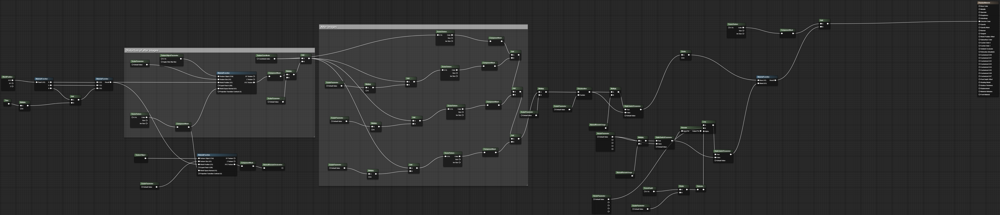

← Early pass — noise overpowers scene
Final — atmosphere without losing legibility →
The Problem
Atmosphere without assets
Most atmospheric effects in games rely on a full asset pipeline — fog volumes, sound design, lighting rigs. I wanted to see what a post-process shader alone could do to make a scene feel psychically charged, without adding a single new mesh or texture to the world.
Spooky/Paranormal effect in Parallax Protocol — June 2025
What I Built
Technical breakdown
- Geometry noise layer — flowing smoke-like distortion applied over scene geometry rather than as a flat screen overlay, giving the effect spatial depth
- Chromatic aberration tuning — aberration dialed to sit at the threshold between clearly visible effect and readable scene — the core design challenge of this shader
- Per-class colour variants — Ghost mode renders green, Psychic renders purple; both driven by the same underlying noise function with parameterised tint
- Multiplayer per-instance rendering — same approach as the VHS shader: bound to player session instance so each player sees only their own mode's effect

drag to pan · scroll to zoomReflection
What this taught me
The hardest part was restraint. In early passes the noise completely swallowed the scene — you couldn't read what was happening. I went back and forth with the designer across multiple iterations to find the threshold where the effect felt otherworldly without destroying legibility. That balance between atmosphere and clarity turned out to be the actual design problem, not the shader math itself.
I also call this the "spooky shader" internally, which is a bit of a misnomer — it's less about horror and more about perceptual distortion as a communication tool. The effect tells the player they are seeing something others cannot.
Research Question
When building atmospheric effects under resource constraints, what visual elements actually carry the emotional weight of a scene — and how can a technical artist isolate and replicate those signals without relying on full asset pipelines?